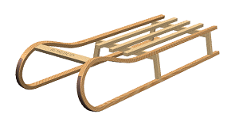

Apply a 3D dome system scene
|
Note |
You must be in the Advanced with full menus role and have access to Advanced Studio Display to complete this activity. |
-
Open des07_sled_assm.

-
If necessary, display the Visualize Shape toolbar.
-
On the Visualize Shape toolbar, click Advanced Studio Display
 .
.
If the Advanced Studio Display is turned off in Visualization Preferences, you get a message asking you if you want enable and use Advanced Studio Display.
-
Select the Don’t display this message again check box, and click Yes.
-
From the Resource bar, click System Scenes
 .
.
-
Select the Nymphenburg 3D Dome thumbnail from the palette.